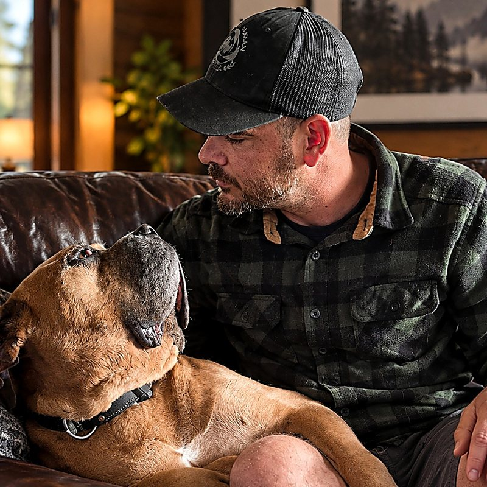

Our Breeding Program
Raising Maso Mastiffs ready to take on the world.
We are a small, family-first breeder in Meteghan, Nova Scotia. We raise Maso Mastiffs as family pets, and as dog trainers, we see raising a litter as the very first stage of training. Every puppy should leave us healthy, steady and ready to learn.

The Breed
What is a Maso Mastiff?
The Maso Mastiff, also called the Giant Maso, is a young breed that is still being developed. The breeding program began around 2001 in the United States, combining the Old English Mastiff with the Cane Corso Italiano.
It is not a fifty-fifty mix. The breed’s founder set out for dogs that are mostly Old English Mastiff, with the goal of a mastiff that is healthier, more athletic and lives a longer life. Masos are known as calm, gentle family dogs that love to please and want to be close to their people.
Our Approach
What we breed for.
- HealthSound, athletic dogs built to live long, active lives with their families.
- TemperamentCalm, steady and gentle at home, with children, visitors and other animals.
- Handler engagementDogs that want to work with their people, pay attention and enjoy learning.
Family First
Raised as family pets.
Our puppies are raised in our home and around the farm, with our own dogs, chickens and ducks. They are bred first and foremost to be loving family companions.
That same steady temperament and love of working with people means some of our dogs have gone on to become certified working dogs.

Welfare
Our welfare practices.
- Maturity and health checks first. We do not breed a female before 18 months of age or a male before 1 year, and neither before health checks such as hips and elbows.
- Rest between litters. After two litters in a year, our female has a full year of rest before any further litter.
- Guided by our local vet. Evangeline Animal Hospital in Lower Saulnierville is our local veterinary partner for health checks, records and care.
Raising Puppies Right
Our six-step litter pathway.
- Plan the litterHealth, temperament and handler engagement guide every pairing.
- Nourish the motherRoyal Canin reproduction nutrition from her first day of heat through lactation.
- Nurture the newbornsWeeks 0 to 3: warmth, mother, quiet and gentle daily handling.
- Introduce the worldWeeks 3 to 8: people, places, sounds, surfaces and handling, one small step at a time.
- Feed for slow, steady growthA giant-breed growth plan, with the same food from our home to yours.
- Go home and keep learningA Royal Canin recommendation kit, early support and a pathway into Puppy Foundations.

Nutrition for the Mother
Royal Canin at every stage.
We are working with Royal Canin through their PRO Breeder’s Club, and we feed Royal Canin at every stage, always changing foods gradually. We use Royal Canin breeder formulas for large and giant breeds, confirmed with our Royal Canin rep.
- First day of heat to day 42 of gestation: Royal Canin PRO HT42D, made specifically for breeding females over 22 lb.
- Day 42 to weaning: Royal Canin PRO Starter Mother & Babydog, designed for mothers during gestation and lactation.
- After weaning: a gradual return to her regular adult food.
When a newborn needs extra help, we keep Babydog Milk (formulated for puppies from birth to weaning) and Puppy PRO Tech (a colostrum and milk supplement Royal Canin recommends for high risk newborns) on hand, and we follow the advice of our veterinarian, Evangeline Animal Hospital in Lower Saulnierville, just up the road.
Early Socialization
Early socialization, stage by stage.
Socialization is about good experiences, not as many experiences as possible. Each new thing is introduced at a level the puppy can handle, with the choice to approach, retreat and rest. Ages are a guide, and we follow each puppy’s lead.
- Weeks 0 to 3: Nurture. Warmth, mother and sleep come first. Each puppy wears a coloured ID collar and is weighed and checked daily. Gentle daily handling, a few seconds at a time, makes being touched and picked up feel normal from the start.
- Early Neurological Stimulation (days 3 to 16). Once a day, we gently handle each puppy for about 3 to 5 seconds in each of five simple positions: a light tickle between the toes with a cotton swab, held upright with its head above its tail, held head down, held on its back in our hands, and set paws down on a cool, damp towel. It takes about a minute per puppy, and we stop if a puppy is unsettled.
- Weeks 3 to 5: Wake up to the world. Weaning begins with softened Starter Mother & Babydog. A larger pen with a separate potty area starts early house manners. New surfaces, everyday sounds at a low volume, simple toys and first calm visitors.
- Weeks 5 to 8: Meet the world. New people, new places on the property, and farm life from a safe distance, watching our chickens and ducks through the fence. Handling for grooming and vet visits, crate comfort, short car rides, and first lessons in name recognition, a marker word, following and coming when called.
- Going home: 8 weeks. Our puppies go home at 8 weeks, with our go-home pack, the Royal Canin recommendation kit, and a discount on Puppy Foundations so socialization and training continue safely at home.
Puppy Nutrition
Puppy nutrition, and why.
Giant breeds should grow slowly and steadily. As Royal Canin explains, giant breed dogs have the longest growth period of any size of dog, which is why their giant-breed growth formulas come in two stages.
- Weaning to 2 months: Royal Canin PRO Starter Mother & Babydog
- 2 to 8 months: Royal Canin Giant Puppy, designed to support the intense growth stage and control excess weight gain
- 8 to 18/24 months: Royal Canin Giant Junior
- Adult: Royal Canin Giant Adult
Our puppies go home already eating the food in their kit. Going home is a big change, and food should not be one more. Royal Canin recommendation kits exist to prevent a sudden switch to a new brand and the stomach upset that can come with it.


Going Home
Every puppy goes home with:
- The Royal Canin recommendation kit: food and treat samples of the food your puppy already eats, a puppy care guide, a breed-specific folder and insert, a registration letter, and a tote bag.
- Our go-home pack: a plaster paw print, a small blanket that smells like mom, a puppy passport, pet insurance papers, vet papers from Evangeline Animal Hospital, a leash with poop bags and a dispenser, our puppy book, How To Train Your Puppy, and our business card and stickers.
Early support. Before pickup, we talk through setting up a safe space and the first night. In the first days, we check in on eating, sleeping and settling. Questions are always welcome.
A pathway into training. Our puppies go home right at the start of the Puppy Foundations window, 8 to 16 weeks, already familiar with name games, markers and gentle handling. Puppy Foundations picks up exactly where we left off, and every puppy family receives a discount on the course.
Our Price Point
$3,000 CAD per puppy.
Our price reflects everything that goes into each litter: health checks before breeding, vet care with Evangeline Animal Hospital, Royal Canin nutrition for the mother from her first day of heat through weaning, and daily handling, Early Neurological Stimulation and staged socialization for every puppy. It also covers the full go-home pack and Royal Canin kit, our early support, and a discount on Puppy Foundations. Just as importantly, it helps ensure our puppies go to families who are serious about the commitment a giant-breed dog brings.
Past Litters
Some of the puppies we have raised.


Gallery
Life with our Masos.



Interested in a future puppy?
Tell us about your family and what you are looking for in a dog. We will get back to you within 1 to 2 business days.